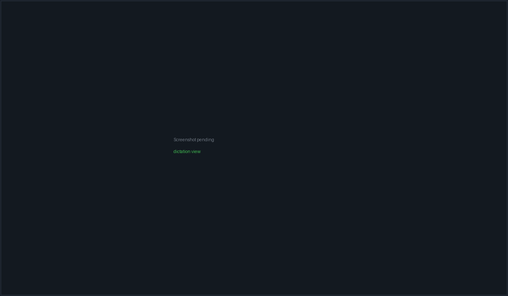

Dictation & analytics#
Dictation turns speech into text entirely on your machine: audio is captured with CPAL, transcribed by a local Whisper model, and delivered to whatever text field you were looking at. Nothing is sent to a cloud speech service, and every transcript is stored in a local SQLite database that also feeds a fairly detailed speaking-analytics tab.
Dictation is a module — it can be switched off entirely in Settings → Integrations & Data → Modules, which removes its view from the sidebar.
Delivery is currently Windows-only. deliver_dictation_text
returns a typed error on macOS and Linux ("Native dictation delivery is
currently available on Windows"), and the caller falls back to the browser
clipboard API. Capture and transcription themselves are cross-platform.
Getting set up#
- Download a Whisper model. Settings → Integrations & Data → Dictation
lists five:
tiny,base,small,medium,large-v3. Download is streamed from the official whisper.cpp Hugging Face repository at a pinned revision, with live progress. - Pick a microphone. The picker lists every CPAL input device with its sample rate and channel count. Leave it on Default to follow the system default.
- Test it. The stethoscope button opens the device for about 1.5 seconds and reports what it actually delivered — sample rate, channels, format, peak level, frame count.
- Optionally enable global shortcuts in Settings → General → Preferences → Keyboard Shortcuts. They are off by default.
Model verification#
A model counts as Ready only when its SHA-256 marker matches and the file is still the byte length it was when hashed. A model truncated after verification — a disk-full copy, an interrupted sync, a half-restored backup — is reported as unverified rather than loaded, so you get "download it again" instead of an opaque whisper.cpp failure.
| Model | Approx. size | Row shows |
|---|---|---|
tiny |
75 MB | Download if absent, Verify if present but unverified, Use/Selected once Ready |
base |
142 MB | ″ |
small |
466 MB (default selection) | ″ |
medium |
1500 MB | ″ |
large-v3 |
3000 MB | ″ |
Models live in ~/.packetbench/models/ggml-<size>.bin, each beside a
.sha256 marker. If your configured model has gone missing, PacketBench
silently falls back to any other verified model on disk and rewrites the
setting — the log records the substitution.
Recording refuses to start when the selected model is not verified, with a message pointing at Settings → Dictation. That check happens before the microphone opens, so you find out up front rather than after speaking.
Recording#

The Dictation view. The left column is capture; the right is analytics and history.Three ways to start:
- Click the round record button in the Dictation view.
- Toggle shortcut — Ctrl+Alt+R by default.
- Push-to-talk — hold Ctrl+Alt+Space by default; release to transcribe.
Escape cancels and discards. Ctrl+Shift+D opens the Dictation view. All three global bindings only exist while global shortcuts are enabled; the idle hint under the record button says so rather than advertising a chord that is not bound.
While recording, a 25-bar exponential-frequency waveform is emitted from the capture thread. Audio is resampled to the 16 kHz Whisper expects, from whatever your device delivers (48 kHz, 44.1 kHz, 8 kHz — all handled).
Recording stops automatically at the maximum recording length (default 5 minutes, clamped by the backend to 10 seconds – 30 minutes) and transcribes what it has. That ceiling bounds retained PCM even if a key release is missed or the frontend is temporarily unresponsive.
When capture goes wrong#
Dictation has a lot of machinery for the case where the microphone stops answering, because a Bluetooth headset that walks out of range can block inside CPAL indefinitely.
| Situation | What happens |
|---|---|
| Microphone hasn't opened after 8 s | An amber panel explains the likely causes and offers Cancel. |
| Microphone hasn't opened after 15 s | The store gives up, tells the backend to drop the device, and reports the failure. |
| Transcription still running after 90 s | An amber panel says large models on long recordings take this long, and offers Cancel. |
| Transcription exceeds its budget | Watchdog fires. The budget is 20× the recorded length with a 90 s floor and a 15 min ceiling. |
| Device dies mid-recording | Dictation stops and transcribes anyway, so the words already spoken survive. The device error comes back as a warning on the result. |
| Device dies while opening | The in-flight open is abandoned and a salvage stop runs. |
| Capture too quiet for ~60 ticks | A non-fatal dictation:warning stall notice appears. The capture is not torn down — a stall can recover, and tearing down would cost you the buffer. |
| Capture shorter than the minimum | "The capture was too short to transcribe. Hold the dictation key until the waveform moves." |
Every capture carries a monotonic id. A response that arrives after its capture was cancelled or superseded is discarded rather than resurrecting a dead recording or delivering a stale transcript — which also means dictating the same word twice in a row delivers twice, instead of the second being mistaken for a duplicate.
Cancel always reaches the backend and always resets locally, so Escape can clear a wedged "Transcribing…" spinner. A cancel with nothing in flight is a state reset: it will not wipe a transcript you are still reading.
Where the text goes#
Delivery is a chain, and the destination is frozen when the capture starts, not when the transcript comes back. Transcription takes seconds and people click elsewhere while it runs; delivering into whatever happens to be focused at that moment would type your words into an unrelated field.
- A PacketBench text field you had focused. The text is inserted directly.
- A terminal pane you had focused. The text is written to the PTY with all line breaks collapsed to spaces — a newline would submit a command, and Whisper emits multi-line output for multi-segment audio. Dictation must never execute a command on its own.
- The clipboard, always.
- A synthetic Ctrl+V into the foreground application, only if you enabled "Paste into other Windows apps".
Two settings gate all of this:
- Auto-paste after transcription (default off). With it off, nothing is delivered automatically — the transcript sits in the Dictation view for you to copy.
- Paste into other Windows apps (default off, and disabled until auto-paste is on). This is the system-wide paste opt-in.
The system-wide paste opt-in is enforced in Rust, not just
in the UI. deliver_dictation_text re-reads the stored setting and can only
ever narrow what the caller asked for, and an unreadable or corrupt
dictation.json means clipboard-only. Any caller reaching the command with
paste: true cannot drive Ctrl+V into the foreground app unless you turned
the setting on.
Fields dictation refuses#
A field is refused as a delivery target when it is a password input, when its
autocomplete is current-password, new-password, or one-time-code, or
when it sits inside a region marked data-dictation="off",
data-dictation="secure", or data-sensitive="true". The Dictation view itself
is marked data-dictation="off", as is the Trust & Provenance settings card.
Focusing a secure region also clears the remembered field, so a transcript spoken at a password prompt cannot land in the form behind it. Focusing an ordinary button (including the mic button itself) does not clear it — clicking the mic is the normal way to start dictating.
The clipboard deliberately keeps the transcript after a paste. Restoring a previous clipboard value could re-expose a password or one-time code that was sitting there.
Composer mic buttons#
An agent composer's mic button uses the same backend but claims the capture, so the automatic delivery path stands down and the composer inserts the text itself. Without that claim the utterance would land twice. If the composer unmounts mid-capture it releases the claim, and a still-open microphone is cancelled rather than transcribed into nowhere.
Settings reference#
Everything below is in Settings → Integrations & Data → Dictation, except the shortcuts, which are in Settings → General → Preferences.
| Control | Default | What it does |
|---|---|---|
| Whisper model | small |
Which verified model transcribes. Larger is slower and more accurate. |
| Microphone | Default | A stable host-qualified CPAL identity. Falls back to the system default when the saved device is gone — with an amber warning in the picker. |
| Maximum recording | 5 minutes | Auto-stop and transcribe at this length. Presets 30 s / 1 / 5 / 10 / 30 min; clamped 10 s–30 min. |
| Language | Auto-detect | Whisper language code, or auto-detection. Offered: English, Spanish, French, German, Italian, Portuguese, Japanese, Chinese. |
| Auto-paste after transcription | Off | Enables the delivery chain above. |
| Paste into other Windows apps | Off (needs auto-paste) | Permits the synthetic Ctrl+V. |
| Custom dictionary | Empty | Terms fed to Whisper as an initial prompt to bias spelling. Capped at 100 terms / 1,024 characters; duplicates ignored. |
| Global dictation shortcuts | Off | Registers the three OS-global accelerators. |
| Push to Talk (hold) | Ctrl+Alt+Space | Re-bindable; must include a modifier. |
| Toggle Recording | Ctrl+Alt+R | Re-bindable; must include a modifier. |
| Cancel Recording | Escape | Fixed, in-app only. |
| Open Dictation | Ctrl+Shift+D | Fixed. |
The three shortcuts must all differ from each other, and PacketBench only ever unregisters accelerators it successfully registered itself — an existing OS or application binding is reported as a conflict, never taken over. The status line under the shortcut rows says which state you are in: off, registering, active, or the conflict message.
History#
The History tab lists past transcriptions, newest first, 100 at a time (server-side page cap 500). Expanding a row shows the full text plus mode, duration, WPM, word count, and sentiment.
Search is a LIKE scan over the transcript text, capped at 200 results, with
%, _, and \ escaped so a search for a literal 100% matches only that.
Transcripts are stored in ~/.packetbench/dictation.db (SQLite). One row per
transcription, with text, mode, a UTC ISO-8601 timestamp, word_count,
duration_seconds, wpm, and sentiment.
There is no delete-a-transcript or clear-history control in the UI,
and no export. To remove history you delete ~/.packetbench/dictation.db.
Analytics#
The Analytics tab is built from a single backend aggregation
(get_dictation_analytics) over the whole entries table, rendered as 21
visualisations from three hand-rolled chart primitives. It fills in
progressively: the first entry gives you totals, speed, and time saved; a day or
two adds the trend lines and heatmaps; a week adds streaks, goals, and the
week-over-week comparison.
Every calendar bucket is UTC — hours, days, weekdays, "today", "this week". Timestamps are stored in UTC and the Rust aggregator has no time-zone database. The Date & Time setting does not affect them, and Settings → General → Date & Time says so. Away from UTC, entries near midnight can put a streak or a daily total on a different day than the timestamp shown elsewhere in the app.
Headline#
Total words · entries · average WPM · time spoken · time saved · vocabulary diversity, plus average sentiment when there is any to average.
Time saved is measured against typing at 40 wpm, clamped at zero per day before summing. Vocabulary diversity is distinct words over total words.
Trends#
Six charts over a trailing series of at most 365 day-buckets (days with at least one entry only): words per day, words per minute, vocabulary growth, cumulative talking time, cumulative time saved, and sentiment over time.
The two cumulative charts are seeded from a carry total for the day-buckets that fell outside the window, so they continue your history instead of restarting at zero. A line under the charts says how much was carried in.
Rhythm#
A yearly daily-activity heatmap, a weekday × hour heatmap, and two hour-of-day bar charts (session count, and mean WPM). Hours with no reading show as an empty tick, not a zero bar.
Consistency#
Three streak numbers that are genuinely different and are shown as such:
| Number | Meaning |
|---|---|
| Current | Consecutive days ending today or yesterday. Zero if neither has an entry. |
| Longest | Best run ever. |
| Last run | Consecutive days ending at your last active day, however long ago that was. |
When you have a lapsed run, a line explains why the current streak reads zero.
Goals are fixed constants, not user settings: 500 words/day and 2,500 words/week. There is no UI to change them. The section also compares this UTC week against last.
Language#
Top words, filler words, distinctive words, word-length distribution, common two- and three-word phrases, new words this week, and a Flesch-Kincaid reading level.
The filler-word list is fixed and reported in declaration order including zeros, so the frontend controls sorting: um, uh, like, basically, actually, literally, honestly, anyway, so, right. "Distinctive" means over three characters, outside a built-in ~300-word common list, and used at least twice. Phrases must appear at least twice and cannot be entirely stopwords. New-words chips are capped at 50 with the real total shown alongside.
Reading level is clamped to 1–18; a value of 0 means "not enough text to score" and renders as an empty state rather than grade zero.
Records#
Fastest WPM, most words in a day, longest entry, longest session.
Sentiment#
Sentiment is a VADER compound score in −1…+1, computed in Rust at the single write point, so every new entry gets one.
Rows recorded before the scorer was added are null, and every
sentiment figure is computed over scored rows only. Because a mean of nothing
is 0, which is byte-identical to a genuinely neutral corpus, the average
sentiment tile and the sentiment chart only render once coverage confirms
there is something to average — otherwise they say so. Unscored days are
omitted from the chart, never plotted as neutral.
The coverage label ("scored 12 of 840 entries") is shown wherever a sentiment number is.
Deliberately absent#
A mode breakdown donut and topic classification were removed on purpose.
PacketBench only ever writes the transcribe mode, so modeBreakdown is always
a single bucket; the topic rules were tuned to a different product. Do not build
anything new on modeBreakdown.
Related#
- Settings reference — the Dictation and Keyboard Shortcuts cards in context.
- Workspaces & terminals — dictating into a terminal pane.
- Agents & conversations — the composer mic button.